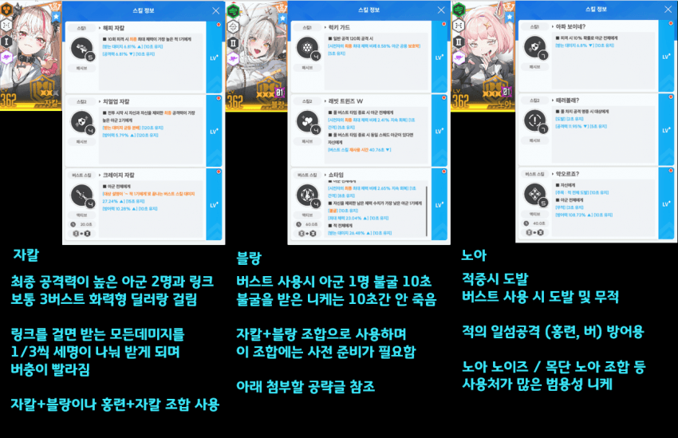
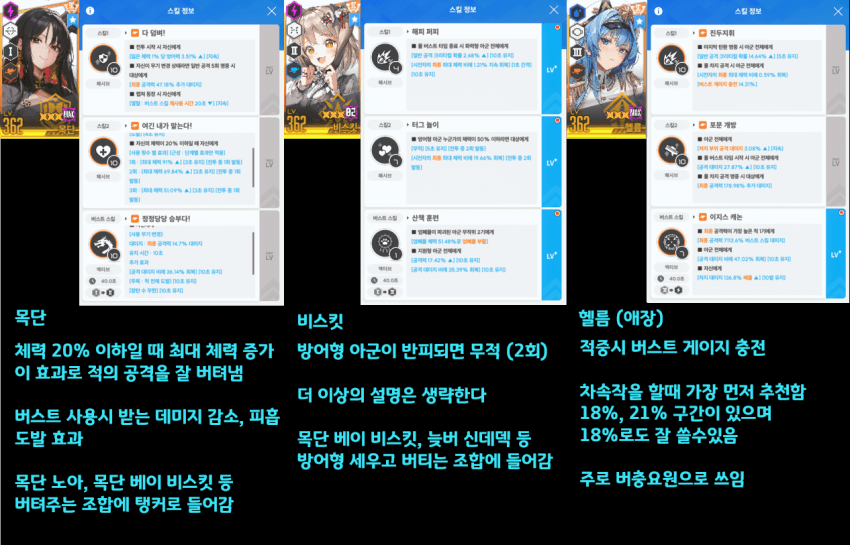
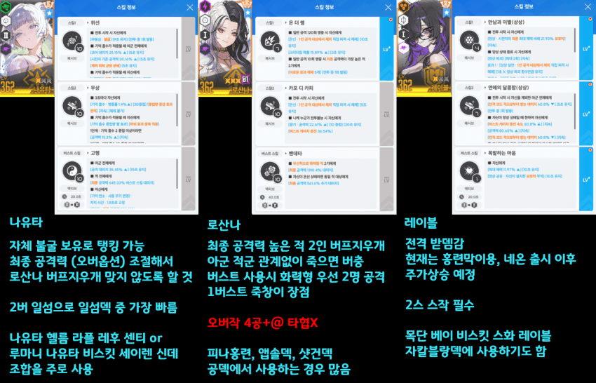
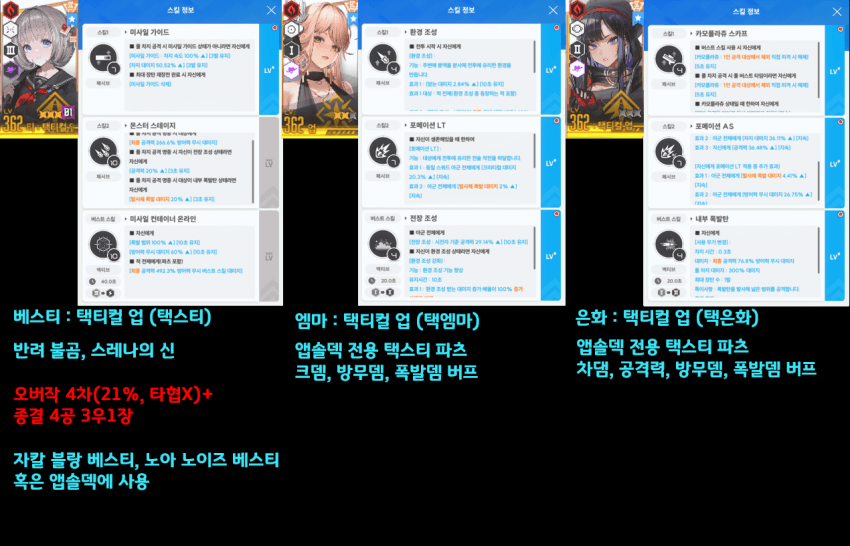
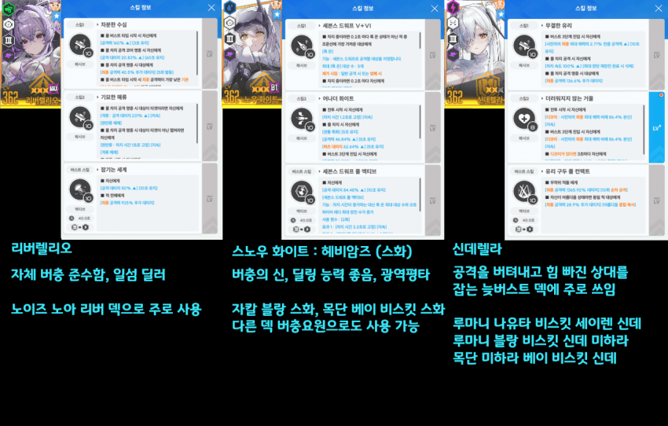
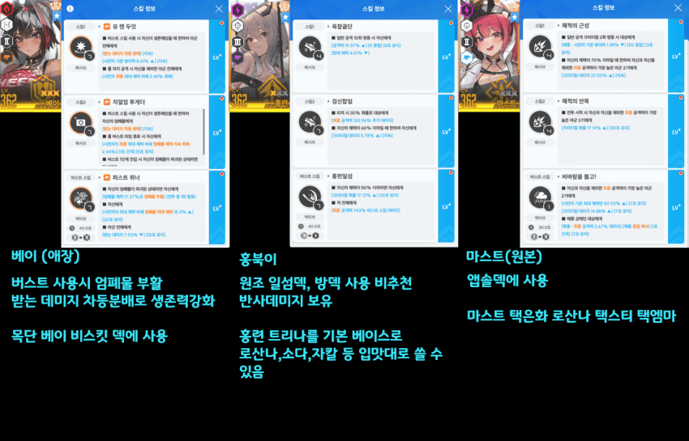
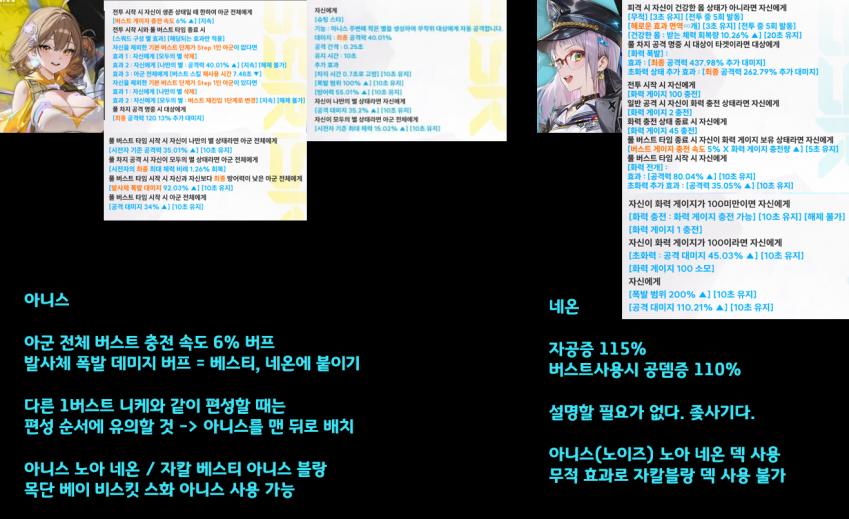

샷건덱은 아직 육성도 못했고 써보질 못해서 글에 첨부 못한점 양해바람
스작 상태는 아직 나도 풀스작 못해서 참고만 해줘

자블덱의 이해(필독)
https://gall.dcinside.com/mgallery/board/view/?id=gov&no=5127115






원본: https://gall.dcinside.com/mgallery/board/view/?id=gov&no=5195586
백업 시각:
샷건덱은 아직 육성도 못했고 써보질 못해서 글에 첨부 못한점 양해바람
스작 상태는 아직 나도 풀스작 못해서 참고만 해줘

자블덱의 이해(필독)
https://gall.dcinside.com/mgallery/board/view/?id=gov&no=5127115





